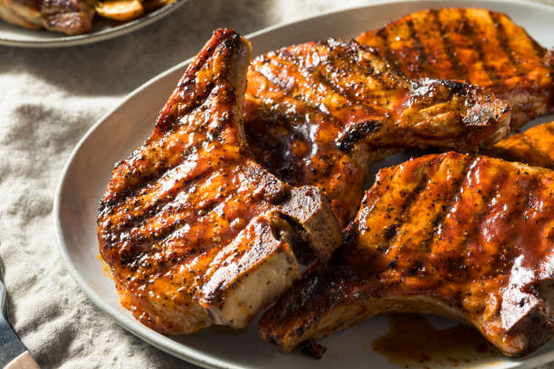

Air Fryer Pork Chops

Description
Boneless pork chops cooked to perfection in the air fryer. This recipe is so easy and
you couldn't ask for a more tender and juicy chop.
Ingredients
- ½ cup grated Parmesan cheese
- 1 teaspoon paprika
- 1 teaspoon garlic powder
- 1 teaspoon kosher salt
- 1 teaspoon dried parsley
- ½ teaspoon ground black pepper
- 4 (5 ounce) boneless pork chops
- 2 tablespoons extra virgin olive oil
Steps
- Preheat the air fryer to 380 degrees F (190 degrees C).
- Mix spices and seasonings in a bowl.
- Coat pork chops in olive oil and spice mixture.
- Place them in air fryer for 10 minutes.
- Let them rest for 5 minutes and enjoy.